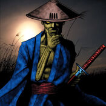

Swordsman from a Foreign Land

Description: "When destroyed in battle, it destroys the opposing monster as well."
STATS
ATK: 250
DEF: 250DECK COST
Deck Cost per Card: 10EFFECT NOT IMPLEMENTED
Fusion List (61 Possible Fusions)
- Swordsman from a Foreign Land + Abyss Flower = Bean Soldier
- Swordsman from a Foreign Land + Ancient Jar = Minomushi Warrior
- Swordsman from a Foreign Land + Ancient Tree of Enlightenment = Bean Soldier
- Swordsman from a Foreign Land + Armaill = Charubin the Fire Knight
- Swordsman from a Foreign Land + Basic Insect = Cockroach Knight
- Swordsman from a Foreign Land + Bat = Cyber Soldier
- Swordsman from a Foreign Land + Bladefly = Cockroach Knight
- Swordsman from a Foreign Land + Blue-Eyed Silver Zombie = Zombie Warrior
- Swordsman from a Foreign Land + Bone Mouse = Zombie Warrior
- Swordsman from a Foreign Land + Candle of Fate = Charubin the Fire Knight
- Swordsman from a Foreign Land + Charubin the Fire Knight = Flame Swordsman
- Swordsman from a Foreign Land + Cyber-Stein = Cyber Soldier
- Swordsman from a Foreign Land + Cyber Commander = Cyber Soldier
- Swordsman from a Foreign Land + Dancing Elf = Celtic Guardian
- Swordsman from a Foreign Land + Dark Plant = Bean Soldier
- Swordsman from a Foreign Land + Darkworld Thorns = Bean Soldier
- Swordsman from a Foreign Land + Dharma Cannon = Cyber Soldier
- Swordsman from a Foreign Land + Dragon Piper = Charubin the Fire Knight
- Swordsman from a Foreign Land + Dragon Zombie = Sword Arm of Dragon
- Swordsman from a Foreign Land + Fire Eye = Charubin the Fire Knight
- Swordsman from a Foreign Land + Fire Reaper = Zombie Warrior
- Swordsman from a Foreign Land + Firegrass = Charubin the Fire Knight
- Swordsman from a Foreign Land + Fireyarou = Flame Swordsman
- Swordsman from a Foreign Land + Flame Ghost = Zombie Warrior
- Swordsman from a Foreign Land + Flame Swordsman = Vermillion Sparrow
- Swordsman from a Foreign Land + Flame Snake = Charubin the Fire Knight
- Swordsman from a Foreign Land + Gale Dogra = Cockroach Knight
- Swordsman from a Foreign Land + Gear Golem the Moving Fortress = Cyber Soldier
- Swordsman from a Foreign Land + Griggle = Bean Soldier
- Swordsman from a Foreign Land + Haniwa = Minomushi Warrior
- Swordsman from a Foreign Land + Jinzo #7 = Cyber Soldier
- Swordsman from a Foreign Land + Korogashi = Cockroach Knight
- Swordsman from a Foreign Land + Koumori Dragon = Sword Arm of Dragon
- Swordsman from a Foreign Land + Leghul = Cockroach Knight
- Swordsman from a Foreign Land + Living Vase = Bean Soldier
- Swordsman from a Foreign Land + Magical Ghost = Armored Zombie
- Swordsman from a Foreign Land + Man-Eating Plant = Bean Soldier
- Swordsman from a Foreign Land + Mavelus = Flame Swordsman
- Swordsman from a Foreign Land + Mech Mole Zombie = Zombie Warrior
- Swordsman from a Foreign Land + Mechanical Spider = Cyber Soldier
- Swordsman from a Foreign Land + Milus Radiant = Tiger Axe
- Swordsman from a Foreign Land + Morphing Jar = Minomushi Warrior
- Swordsman from a Foreign Land + Muka Muka = Minomushi Warrior
- Swordsman from a Foreign Land + Mushroom Man = Bean Soldier
- Swordsman from a Foreign Land + Mystical Sheep #2 = Tiger Axe
- Swordsman from a Foreign Land + One-Eyed Shield Dragon = Dragon Statue
- Swordsman from a Foreign Land + Petit Dragon = Dragoness the Wicked Knight
- Swordsman from a Foreign Land + Phantom Ghost = Zombie Warrior
- Swordsman from a Foreign Land + Pot the Trick = Minomushi Warrior
- Swordsman from a Foreign Land + Rock Ogre Grotto #2 = Minomushi Warrior
- Swordsman from a Foreign Land + Shadow Specter = Zombie Warrior
- Swordsman from a Foreign Land + Silver Fang = Tiger Axe
- Swordsman from a Foreign Land + Skull Servant = Zombie Warrior
- Swordsman from a Foreign Land + Spike Seadra = Sword Arm of Dragon
- Swordsman from a Foreign Land + Synchar = Tiger Axe
- Swordsman from a Foreign Land + The Wandering Doomed = Zombie Warrior
- Swordsman from a Foreign Land + White Dolphin = Wow Warrior
- Swordsman from a Foreign Land + Wing Egg Elf = Celtic Guardian
- Swordsman from a Foreign Land + Wings of Wicked Flame = Flame Swordsman
- Swordsman from a Foreign Land + Yamatano Dragon Scroll = Dragon Statue
- Swordsman from a Foreign Land + Zombie Warrior = Armored Zombie